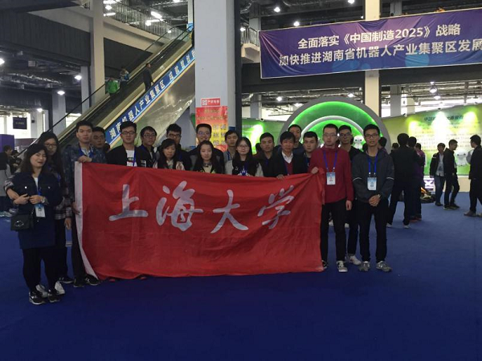

2016年11月2日晚7时，在延长校区西部自动化楼309举行“中国机器人大赛”家庭服务机器人赛后总结大会。出席此次颁奖仪式的有自强队指导老师陈万米和黄慎之老师。
本次总结大会，首先由自强队指导老师陈万米老师总结此次长沙中国机器人大赛的获奖成果，并对参赛队员进行表彰。自强队家庭组在此次中国机器人大赛中获得通用服务机器人项目冠军，超市机器人项目冠军，非限定项目亚军，多人辨识项目二等奖的优异成绩，覆盖了该赛项的所有项目。
之后陈万米老师指出了本次比赛过程中机器人存在的问题，细心询问队员们在比赛过程中遇到的困难，并跟在场所有队员共同讨论解决方案，鼓励学生勇于直面困难，解决困难。黄慎之老师也在最后认真询问学生在比赛过程中的种种困难，并给予指导。
总结大会结束后，同学们对今后要走的科研道路更加清晰，并都下定决心为自强队和自己的未来而努力奋斗！
机自学院自强队
2016.11.3